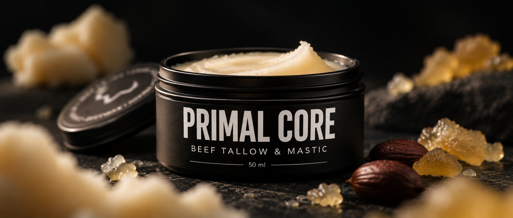

Beef Tallow: Η επιστροφή στις ρίζες της περιποίησης
Γιατί ένα συστατικό που χρησιμοποιείται εδώ και αιώνες επιστρέφει στη σύγχρονη ανδρική περιποίηση προσώπου.

Πότε η περιποίηση έγινε τόσο περίπλοκη;
Κάποτε, η περιποίηση του δέρματος ήταν απλή.
Σήμερα χρειάζεσαι σχεδόν πτυχίο χημείας για να καταλάβεις τι περιέχει η ενυδατική σου.
Οροί. Ενεργά συστατικά. Εξειδικευμένες κρέμες. Πρωινές και βραδινές ρουτίνες. Διαφορετικά προϊόντα για διαφορετικές περιοχές του προσώπου.
Η βιομηχανία καλλυντικών έχει δημιουργήσει μια τεράστια αγορά γύρω από την περιποίηση.
Και μαζί της, μια εντύπωση: ότι όσο πιο σύνθετη είναι η καθημερινή σου ρουτίνα, τόσο καλύτερα φροντίζεις το δέρμα σου.
Δεν είναι απαραίτητα έτσι.
Η επιδερμίδα χρειάζεται σωστό καθαρισμό, επαρκή ενυδάτωση, προστασία από την ηλιακή ακτινοβολία και προϊόντα κατάλληλα για τις δικές της ανάγκες.
Αυτά δεν απαιτούν πάντα δέκα διαφορετικά μπουκάλια.
Και αυτή ακριβώς είναι η σκέψη πίσω από την επιστροφή ενός παραδοσιακού συστατικού: του beef tallow.
1. Τι σημαίνει πραγματικά Ancestral Skincare;
Ancestral skincare σημαίνει περιποίηση εμπνευσμένη από παραδοσιακές πρώτες ύλες και πρακτικές.
Δεν σημαίνει επιστροφή στο παρελθόν.
Δεν σημαίνει απόρριψη της επιστήμης.
Και σίγουρα δεν σημαίνει ότι οτιδήποτε φυσικό είναι αυτομάτως καλύτερο.
Σημαίνει ότι μπορούμε να εξετάσουμε ξανά υλικά που χρησιμοποιήθηκαν για γενιές και να αξιολογήσουμε τη θέση τους σε σύγχρονες καλλυντικές συνθέσεις.
Πριν εμφανιστούν οι βιομηχανικές κρέμες, οι άνθρωποι χρησιμοποιούσαν διάφορα ζωικά λίπη και φυτικά έλαια για την περιποίηση και την προστασία του δέρματός τους από το κρύο και την ξηρότητα.
Ένα από αυτά ήταν το tallow: το καθαρισμένο λίπος βοοειδών.
Η ιστορική χρήση του δείχνει ότι πρόκειται για μια γνωστή πρώτη ύλη με μακρά παράδοση.
Η πραγματική του αξία σήμερα, όμως, πρέπει να κρίνεται με σύγχρονα επιστημονικά κριτήρια.
Δεν επιστρέφουμε στο παρελθόν επειδή ήταν καλύτερο. Κρατάμε ό,τι αξίζει να εξελιχθεί.
2. Γιατί το Beef Tallow έχει θέση στη σύγχρονη περιποίηση;
Το beef tallow δεν είναι κάποιο μυστηριώδες συστατικό.
Είναι μια λιπαρή πρώτη ύλη που αποτελείται κυρίως από τριγλυκερίδια, με σημαντική παρουσία τριών λιπαρών οξέων:
- Ελαϊκό οξύ: Συνδέεται με τη μαλακτική συμπεριφορά και την αίσθηση των λιπαρών συστατικών.
- Παλμιτικό οξύ: Συναντάται επίσης στο φυσικό σμήγμα της επιδερμίδας και χρησιμοποιείται στην κοσμετολογία.
- Στεατικό οξύ: Συμβάλλει στη δομή, τη σταθερότητα και την υφή πολλών καλλυντικών προϊόντων.
Αυτός ο συνδυασμός καθιστά το tallow ενδιαφέρουσα πρώτη ύλη για τη δημιουργία πλούσιων, μαλακτικών προϊόντων περιποίησης.
Η λιπαρή φύση του μπορεί να συμβάλει στη δημιουργία ενός προστατευτικού στρώματος στην επιφάνεια του δέρματος, περιορίζοντας την αίσθηση ξηρότητας.
Δεν πρόκειται για κάποιο βιολογικό θαύμα.
Πρόκειται για γνωστές ιδιότητες λιπαρών ουσιών που αξιοποιούνται εδώ και χρόνια στην κοσμετολογία.
Και με τη σωστή σύνθεση, μπορούν να αποκτήσουν μια νέα, σύγχρονη εφαρμογή.
3. Clean Beauty: Τι σημαίνει πραγματικά «καθαρή» περιποίηση;
Η λέξη clean βρίσκεται σχεδόν παντού.
Clean skincare.
Clean ingredients.
Clean beauty.
Μαζί της, μια ατελείωτη λίστα από πράγματα που ένα προϊόν υποτίθεται ότι δεν πρέπει να περιέχει.
Χωρίς parabens. Χωρίς sulfates. Χωρίς τεχνητά αρώματα.
Όμως η απουσία ενός συστατικού δεν αποτελεί από μόνη της απόδειξη ποιότητας.
Ένα προϊόν με πέντε συστατικά δεν είναι απαραίτητα ασφαλέστερο από ένα προϊόν με είκοσι.
Και ένα φυσικό συστατικό μπορεί επίσης να προκαλέσει ανεπιθύμητες αντιδράσεις.
Για εμάς, η ουσία της απλής περιποίησης βρίσκεται αλλού.
Κάθε συστατικό πρέπει να έχει συγκεκριμένο λόγο ύπαρξης.
Όχι επειδή ακούγεται εντυπωσιακό.
Όχι επειδή είναι δημοφιλές στα social media.
Αλλά επειδή εξυπηρετεί έναν σαφή σκοπό μέσα στη σύνθεση.
Αυτή είναι και η φιλοσοφία ανάπτυξης του PRIMAL CORE.
Λίγα, προσεκτικά επιλεγμένα συστατικά.
Χωρίς προσθήκη νερού.
Χωρίς συνθετικό άρωμα.
Χωρίς περιττή πολυπλοκότητα.
4. Η σχέση του Beef Tallow με τα φυσικά λιπίδια του δέρματος
Η εξωτερική στιβάδα της επιδερμίδας διαθέτει έναν προστατευτικό μηχανισμό που ονομάζεται δερματικός φραγμός.
Ανάμεσα στα κύτταρα υπάρχουν λιπίδια, κυρίως κεραμίδια, χοληστερόλη και ελεύθερα λιπαρά οξέα, που συμβάλλουν στον περιορισμό της απώλειας νερού.
Το beef tallow περιέχει λιπαρά οξέα που συναντώνται επίσης σε διάφορα φυσικά λιπίδια του ανθρώπινου σώματος.
Αυτό, ωστόσο, δεν σημαίνει ότι έχει την ίδια σύσταση με τον δερματικό φραγμό ή ότι το δέρμα το αναγνωρίζει και το ενσωματώνει αυτόματα.
Ο ρόλος του σε ένα balm είναι κυρίως μαλακτικός.
Μπορεί να βοηθήσει το δέρμα να αισθάνεται πιο απαλό και να περιορίσει την απώλεια υγρασίας μέσω της λιπαρής προστατευτικής επίστρωσης που σχηματίζει.
Η ακριβής συμπεριφορά του εξαρτάται από τη συνολική σύνθεση.
Η αποτελεσματικότητα δεν βρίσκεται μόνο στο βασικό συστατικό. Βρίσκεται στον τρόπο που το χρησιμοποιείς.
5. Τι χάνεται μέσα στις πολύπλοκες συνθέσεις;
Η σύγχρονη κοσμετολογία έχει πετύχει σημαντικά πράγματα.
Έχει δημιουργήσει προϊόντα με καλύτερη σταθερότητα, προηγμένα συστήματα μεταφοράς συστατικών και στοχευμένες εφαρμογές.
Αλλά δεν χρειάζονται όλοι οι καταναλωτές την ίδια πολυπλοκότητα.
Ένας άντρας που αντιμετωπίζει καθημερινή ξηρότητα μετά το ντους μπορεί να αναζητά κάτι πολύ πιο συγκεκριμένο.
Μια ενυδατική που απλώνεται εύκολα.
Που δεν αφήνει έντονη γυαλάδα.
Που δεν απαιτεί πέντε διαφορετικά βήματα.
Που μπορεί να χρησιμοποιήσει καθημερινά χωρίς δεύτερη σκέψη.
Αυτή η ανάγκη δεν απαιτεί απαραίτητα μια σύνθεση με δεκάδες συστατικά.
Απαιτεί όμως σωστή διαμόρφωση.
Γιατί επιλέγουμε μια άνυδρη προσέγγιση
Το PRIMAL CORE αναπτύσσεται ως άνυδρο face balm, δηλαδή χωρίς προσθήκη νερού.
Αυτό επιτρέπει τη δημιουργία μιας λιπαρής σύνθεσης χωρίς να απαιτείται η κλασική διαδικασία γαλακτωματοποίησης νερού και ελαίων.
Δεν σημαίνει ότι το προϊόν είναι αυτομάτως ασφαλέστερο, ότι δεν χρειάζεται ελέγχους ή ότι κάθε συντηρητικό είναι περιττό.
Σημαίνει ότι ακολουθούμε μια διαφορετική τεχνική προσέγγιση στη δημιουργία ενός προϊόντος καθημερινής μαλακτικής φροντίδας.
6. Φυσικό δεν σημαίνει αυτόματα καλύτερο
Ας ξεκαθαρίσουμε κάτι.
Η φύση δεν δημιουργεί συστατικά με σκοπό την ανθρώπινη περιποίηση.
Το γεγονός ότι μια ουσία είναι φυσική δεν εγγυάται ότι είναι αποτελεσματική ή ασφαλής σε κάθε χρήση.
Αντίστοιχα, ένα συνθετικό συστατικό δεν είναι απαραίτητα επιβλαβές.
Αυτό που έχει σημασία είναι η σωστή επιλογή, η κατάλληλη συγκέντρωση, η σταθερότητα και η ασφάλεια της τελικής σύνθεσης.
Επομένως, η χρήση του beef tallow δεν αποτελεί από μόνη της εγγύηση αποτελεσματικότητας.
Είναι η αφετηρία.
Το αποτέλεσμα κρίνεται από την ποιότητα της πρώτης ύλης, τη διαδικασία παρασκευής και τη συνολική απόδοση του προϊόντος.
Και αυτό είναι ένα από τα σημεία στα οποία θέλουμε να διαφοροποιηθεί το PRIMAL CORE.
7. Το Beef Tallow είναι η βάση. Όχι ολόκληρη η λύση.
Υπάρχει μια τάση να παρουσιάζεται το beef tallow ως το μοναδικό συστατικό που χρειάζεται το δέρμα.
Η πραγματικότητα είναι πιο ενδιαφέρουσα.
Το beef tallow μπορεί να αποτελέσει τη βάση μιας καλλυντικής σύνθεσης.
Άλλα συστατικά μπορούν να χρησιμοποιηθούν για να επηρεάσουν την υφή, την απλωσιμότητα, την οξειδωτική σταθερότητα ή τη συνολική αίσθηση εφαρμογής.
Αυτή η προσέγγιση επιτρέπει τη δημιουργία ενός προϊόντος που δεν βασίζεται μόνο στις ιδιότητες μιας παραδοσιακής πρώτης ύλης.
Αλλά αξιοποιεί τη σύγχρονη τεχνογνωσία για να αντιμετωπίσει τις πρακτικές απαιτήσεις του χρήστη.
Γιατί το ζητούμενο δεν είναι απλώς να φτιάξουμε ένα balm με beef tallow.
Είναι να φτιάξουμε ένα balm που ο άντρας θα θέλει πραγματικά να χρησιμοποιεί κάθε μέρα.
8. Γιατί αυτή η φιλοσοφία έχει σημασία σήμερα
Η καθημερινότητά μας είναι ήδη γεμάτη αποφάσεις.
Τι θα φάμε.
Πότε θα προπονηθούμε.
Πώς θα οργανώσουμε τη δουλειά μας.
Πόσο χρόνο θα διαθέσουμε στον εαυτό μας.
Η περιποίηση προσώπου δεν χρειάζεται να προσθέτει άλλη μία περίπλοκη διαδικασία.
Για πολλούς άντρες, η μεγαλύτερη πρόκληση δεν είναι να βρουν την πιο εξελιγμένη κρέμα.
Είναι να αποκτήσουν μια απλή συνήθεια που μπορούν να διατηρήσουν.
Και σε αυτό ακριβώς θέλει να απαντήσει το PRIMAL CORE.
Όχι με νοσταλγία για το παρελθόν.
Αλλά με μια σύγχρονη προσέγγιση που βάζει την απλότητα στην πρώτη θέση.
PRIMAL CORE: ANCESTRAL INGREDIENTS. MODERN FORMULATION.
Δεν προσπαθούμε να γυρίσουμε την περιποίηση εκατό χρόνια πίσω.
Προσπαθούμε να κρατήσουμε ό,τι αξίζει από το παρελθόν και να το εξελίξουμε για το σήμερα.
Το PRIMAL CORE είναι ένα ανδρικό face balm υπό ανάπτυξη, με βασικό συστατικό το beef tallow.
Σχεδιάζεται με στόχο τη μαλακτική φροντίδα, την καθημερινή άνεση και μια ευχάριστη, μη υπερβολικά λιπαρή αίσθηση εφαρμογής.
Δεν υπόσχεται να σταματήσει τον χρόνο.
Δεν υπόσχεται να αντικαταστήσει κάθε προϊόν περιποίησης.
Ο στόχος είναι πολύ πιο συγκεκριμένος.
Να προσφέρει έναν απλό τρόπο να φροντίζεις το πρόσωπό σου.
Χωρίς περιττές διαδικασίες.
Χωρίς περίπλοκες ρουτίνες.
Χωρίς υπερβολικές υποσχέσεις.
PRIMAL CORE
ΔΕΝ ΧΡΕΙΑΖΕΣΑΙ ΑΛΛΑ ΔΕΚΑ ΠΡΟΪΟΝΤΑ.
ΧΡΕΙΑΖΕΣΑΙ ΕΝΑ ΠΟΥ ΝΑ ΛΕΙΤΟΥΡΓΕΙ.
Η δύναμη της απλότητας. Η γνώση της σύγχρονης κοσμετολογίας.
Το πρώτο μας face balm βρίσκεται υπό ανάπτυξη.
Μπες στη λίστα αναμονής και ενημερώσου πρώτος για την κυκλοφορία του.
ΜΠΕΣ ΣΤΗ ΛΙΣΤΑ ΑΝΑΜΟΝΗΣΤο προϊόν βρίσκεται υπό ανάπτυξη. Η τελική σύνθεση, τα χαρακτηριστικά του και οι ισχυρισμοί αποτελεσματικότητας θα οριστικοποιηθούν μετά τους απαραίτητους ελέγχους.
← Όλα τα άρθρα